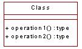

Standards: Operations
 |
An operation is the implementation of a service that can be requested from
an object to effect behavior. |
| Related Information: |
|
Topics
Background 
An operation is an abstraction of something you can do to an object that is shared by
all objects of that class.
In most cases specification of public and protected methods is sufficient (public -
defines the external interface of the class, protected - may be used as part of an
inheritance framework). Only add private methods to the design of a class if
it illustrates interesting behavior. In general, private methods are added to aid
implementation - breaking down a complex algorithm into smaller parts. As such it is
not really necessary to show this in the design. If the designer has an idea in mind
as to how to implement a method this could be added as notes at the bottom of the
description.
Naming Standards
Operation names are short verbs or verb phrases that represent some behavior
of their
enclosing class. You capitalize the first letter of every word in an operation name
except the first letter as in fred or isEmpty. The names of the operations should
reflect the roles and responsibilities assigned to the classes and their objects. The
object sending the message can expect the operation to be performed but does not know how
it is to be performed. The operation name should reflect this.
The name of an operation should clearly show its purpose. Avoid general names, like getData, because they do not say much and not all
readers will interpret them in the same way. Use a name that shows exactly what is
expected, such as getAddress.
You should specify the operations and their parameters using implementation language
syntax and semantics. This way the interfaces will already be specified in terms of the
implementation language when coding starts.
Operation names do not need to be unique across classes and as such do not need to
include the class name. e.g. GetAddressInformationSource
could be replaced with GetInformationSource.
Operations that are conceptually the same should have the same name even if different
classes define them, they are implemented in entirely different ways, or they have a
different number of parameters. An operation that creates an object, for example, should
have the same name in all classes. If operations in several classes have the same
name, the operation must perform similar behavior in all the objects.
General Documentation Standards
The operation must be understandable to those who want to use it. To this end, you
should briefly describe it, including the following:
The meaning of the parameters (if this is not obvious).
Which parameters are assumed to have a value when the operation is invoked.
What is done in the operation.
Which parameters are given a value as a response to the message.
For public operations it should be noted which responsibility the operation fulfils.
Stereotypes
The following stereotypes should be used:
<<static>> - the operation is a class operation rather than an object
operation
<<abstract>> - the operation is abstract (i.e. pure virtual)
as these are not directly supported in Rose without using the code generation settings.
Operation Parameters
Where an operation is on a public class (e.g. interface packages, utility classes, etc)
the operation parameters should be in C++ form and include the C++ concepts.
Where an operation is on a private class (one inside a package that is not exported)
then the operation parameters can be specified in a style agreed between the designer /
implementer.
Examples
None
|